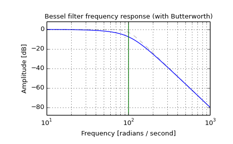
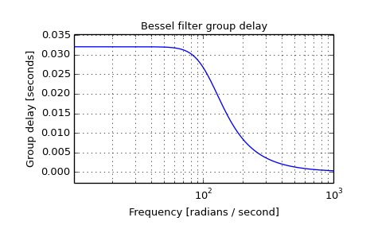

scipy.signal.bessel¶
- scipy.signal.bessel(N, Wn, btype='low', analog=False, output='ba')[source]¶
Bessel/Thomson digital and analog filter design.
Design an Nth order digital or analog Bessel filter and return the filter coefficients.
Parameters: N : int
The order of the filter.
Wn : array_like
A scalar or length-2 sequence giving the critical frequencies. For a Bessel filter, this is defined as the point at which the asymptotes of the response are the same as a Butterworth filter of the same order. For digital filters, Wn is normalized from 0 to 1, where 1 is the Nyquist frequency, pi radians/sample. (Wn is thus in half-cycles / sample.) For analog filters, Wn is an angular frequency (e.g. rad/s).
btype : {‘lowpass’, ‘highpass’, ‘bandpass’, ‘bandstop’}, optional
The type of filter. Default is ‘lowpass’.
analog : bool, optional
When True, return an analog filter, otherwise a digital filter is returned.
output : {‘ba’, ‘zpk’, ‘sos’}, optional
Type of output: numerator/denominator (‘ba’), pole-zero (‘zpk’), or second-order sections (‘sos’). Default is ‘ba’.
Returns: b, a : ndarray, ndarray
Numerator (b) and denominator (a) polynomials of the IIR filter. Only returned if output='ba'.
z, p, k : ndarray, ndarray, float
Zeros, poles, and system gain of the IIR filter transfer function. Only returned if output='zpk'.
sos : ndarray
Second-order sections representation of the IIR filter. Only returned if output=='sos'.
Notes
Also known as a Thomson filter, the analog Bessel filter has maximally flat group delay and maximally linear phase response, with very little ringing in the step response.
As order increases, the Bessel filter approaches a Gaussian filter.
The digital Bessel filter is generated using the bilinear transform, which does not preserve the phase response of the analog filter. As such, it is only approximately correct at frequencies below about fs/4. To get maximally flat group delay at higher frequencies, the analog Bessel filter must be transformed using phase-preserving techniques.
For a given Wn, the lowpass and highpass filter have the same phase vs frequency curves; they are “phase-matched”.
The 'sos' output parameter was added in 0.16.0.
Examples
Plot the filter’s frequency response, showing the flat group delay and the relationship to the Butterworth’s cutoff frequency:
>>> from scipy import signal >>> import matplotlib.pyplot as plt
>>> b, a = signal.butter(4, 100, 'low', analog=True) >>> w, h = signal.freqs(b, a) >>> plt.plot(w, 20 * np.log10(np.abs(h)), color='silver', ls='dashed') >>> b, a = signal.bessel(4, 100, 'low', analog=True) >>> w, h = signal.freqs(b, a) >>> plt.semilogx(w, 20 * np.log10(np.abs(h))) >>> plt.title('Bessel filter frequency response (with Butterworth)') >>> plt.xlabel('Frequency [radians / second]') >>> plt.ylabel('Amplitude [dB]') >>> plt.margins(0, 0.1) >>> plt.grid(which='both', axis='both') >>> plt.axvline(100, color='green') # cutoff frequency >>> plt.show()
>>> plt.figure() >>> plt.semilogx(w[1:], -np.diff(np.unwrap(np.angle(h)))/np.diff(w)) >>> plt.title('Bessel filter group delay') >>> plt.xlabel('Frequency [radians / second]') >>> plt.ylabel('Group delay [seconds]') >>> plt.margins(0, 0.1) >>> plt.grid(which='both', axis='both') >>> plt.show()
